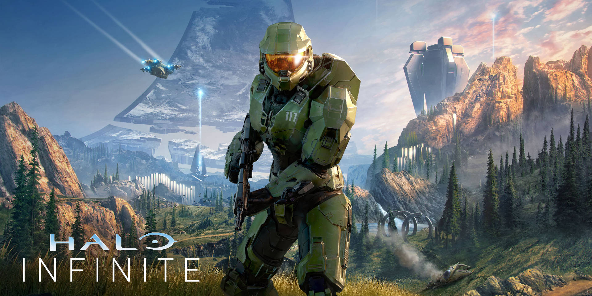
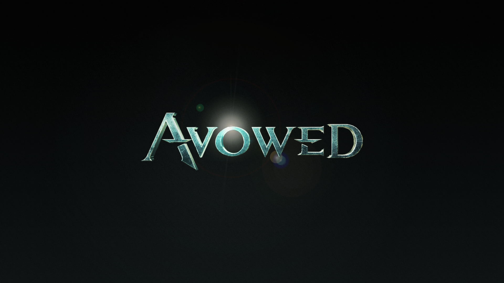
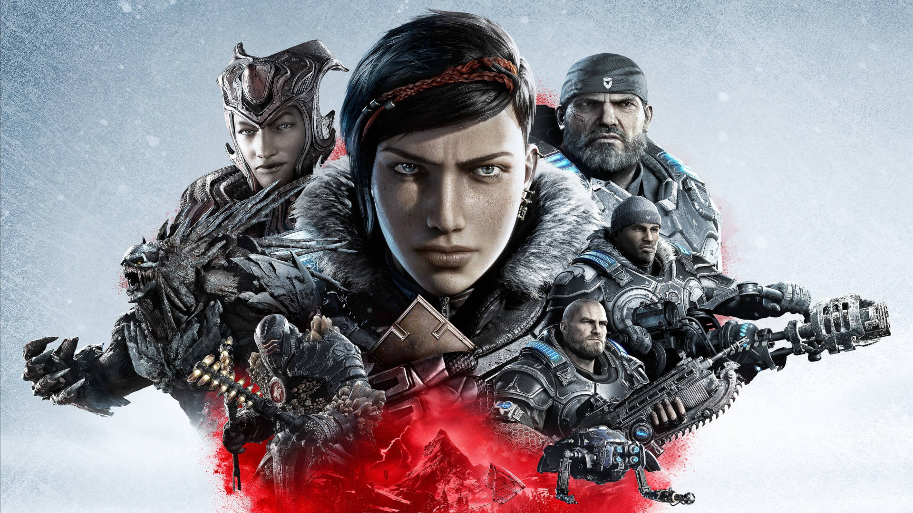
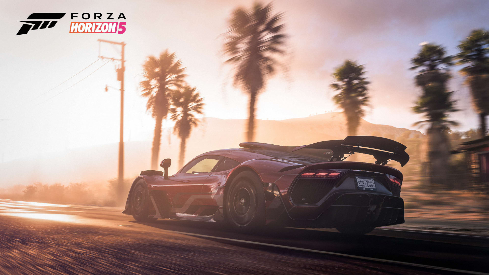
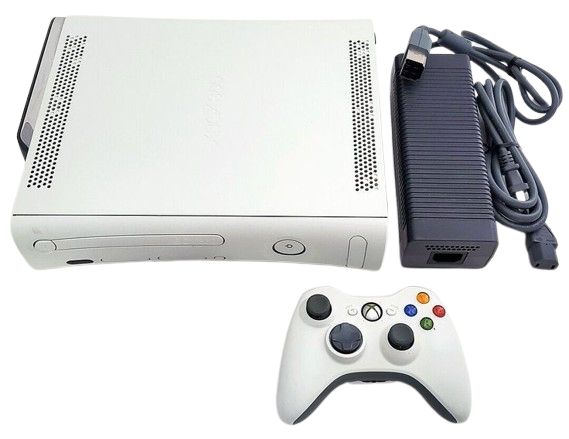
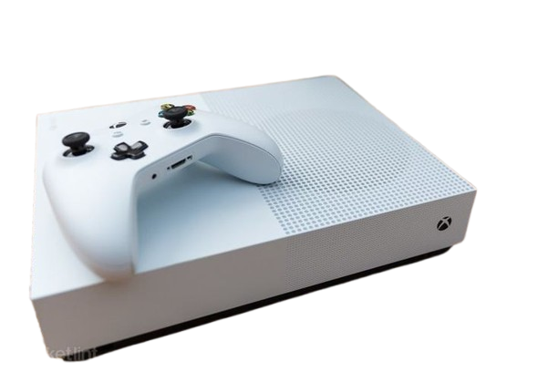
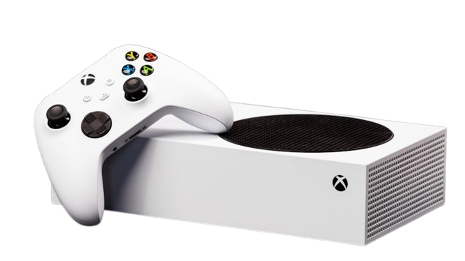
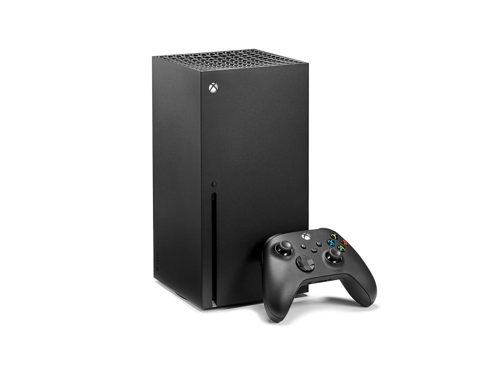
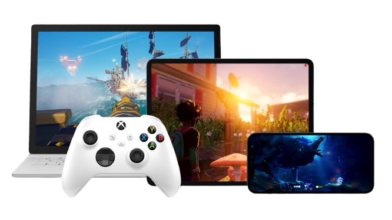

Nossos Jogos

Halo
Halo é uma série de jogos eletrônicos de ficção científica e franquia de mídia, originalmente desenvolvida pela Bungie e atualmente gerenciada e desenvolvida pela Halo Studios (anteriormente 343 Industries), parte do Xbox Game Studios da Microsoft. A série foi lançada em novembro de 2001 com o videogame de tiro em primeira pessoa Halo: Combat Evolved e seu romance tie-in, The Fall of Reach. A última grande parcela, Halo Infinite, foi lançada em 2021.

Avowed
Avowed é um jogo eletrônico de RPG de Ação em primeira pessoa desenvolvido pela Obsidian Entertainment e publicado pela Xbox Game Studios. O título foi lançado em 18 de fevereiro de 2025 para o Xbox Series X/S e Microsoft Windows diretamente no serviço Xbox Game Pass.

Gears of war
Gears of War é uma franquia de jogos eletrónicos de tiro em terceira pessoa criada e originalmente propriedade da Epic Games, desenvolvida e gerida pela The Coalition, e agora a Xbox Game Studios tem seus direitos e publica-a. A série foca no conflito entre a humanidade, os reptilianos humanoides subterrâneos conhecidos como Locust Horde, e os seus homólogos modificados, os Lambent.

Forza Horizon
Forza Horizon é um jogo de corrida exclusivo para o console Xbox 360 e retrocompatível com Xbox One com melhorias e resolução 4K. Desenvolvido principalmente pela desenvolvedora britânica Playground Games em associação com a estadunidense Turn 10 Studios, o jogo faz parte da franquia Forza, porém é mais considerado um spin-off ao invés de um membro da série principal. Em 20 de outubro de 2016, o jogo foi removido da loja da Microsoft.
Consoles XBOX

Xbox Classico
O Xbox é um console de videogame doméstico e o primeiro título da série Xbox de consoles de videogame fabricados pela Microsoft. Foi lançado em 15 de novembro de 2001 na América do Norte, seguido pelo Japão em 22 de fevereiro de 2002, Austrália e Europa em 14 de março de 2002. Clique aqui para saber mais

Xbox 360
O Xbox 360 é um console de video games desenvolvido pela Microsoft. Como sucessor do Xbox original, é o segundo console da série Xbox. Ele competiu com o PlayStation 3 da Sony e o Wii da Nintendo como parte da sétima geração de consoles. Clique aqui para saber mais

Xbox Xbox One
O Xbox One é uma linha de consoles de videogames domésticos de oitava geração desenvolvida pela empresa Microsoft, lançado em 2013, como a terceira edição da série Xbox e o sucessor do Xbox 360. Competiu diretamente com os consoles PlayStation 4 e Nintendo Switch. Clique aqui para saber mais

Xbox Series S
O Xbox Series X e Series S são consoles domésticos de jogos eletrônicos desenvolvidos pela Microsoft. É a quarta geração da família de consoles Xbox; fazem parte da nona geração de consoles de videogame, que também inclui o PlayStation 5 da Sony, lançado no mesmo mês. Ambos substituíram o Xbox One, foi anunciada pela primeira vez durante a E3 2019 como Project Scarlett. Ambos os consoles foram lançados em 10 de novembro de 2020. Clique aqui para saber mais

Xbox Series X
Phil Spencer, chefe do Xbox, afirmou que a Microsoft estava priorizando altas taxas de quadros e tempos de carregamento mais rápidos como prioridade em resoluções mais altas, que o Series X alcança através dos recursos mais compatíveis da CPU e da GPU. Clique aqui para saber mais
